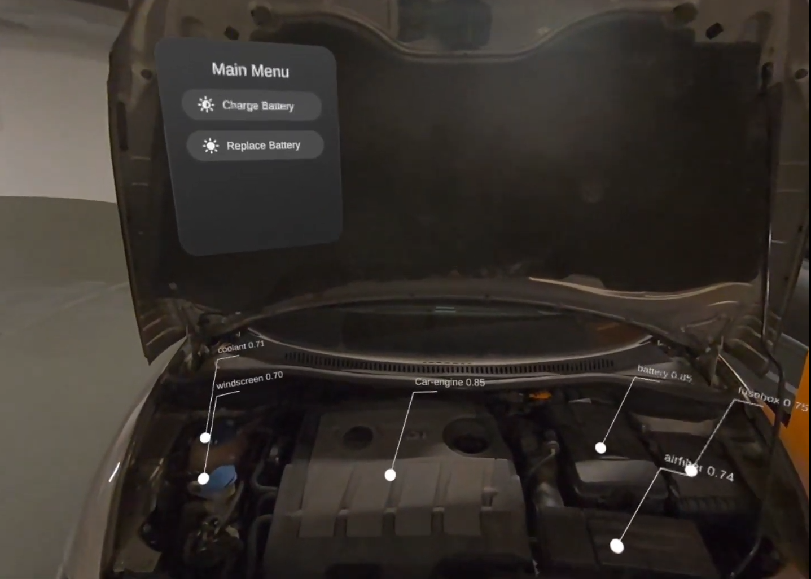

SensAI x Meta XR Hackathon
🏆 First Place — 2025
48-hour Hackathon · Meta Quest 3 · XR + Computer Vision
Unity
Meta Quest 3
Roboflow
Computer Vision
XR
Instance Segmentation
C#
Overview
- 48-hour hackathon organized by SensAI with Meta, Unity, and partners. Theme: "AI with Camera Access".
- Our team built an XR car-repair assistant running on Meta Quest 3: point the headset at a car engine and get a visual, interactive repair tutorial for each part you see.
- Won First Place, recognized by Meta, Unity, and the partner companies.
1) The App
- The user wears a Meta Quest 3 headset and looks at a car engine. The app detects and segments the individual motor parts in real time using the passthrough camera.
- The user reaches out with their hand and presses a detected part. A repair tutorial for that specific component appears as an overlay, directly in their field of view.
2) Computer Vision — My Contribution
- Responsible for the full computer vision pipeline, built within the 48-hour window.
- Labeling: manually annotated images of car engine parts with segmentation masks to create the training dataset.
- Training: trained an instance segmentation model on Roboflow to detect and outline each part by category.
- Deployment: integrated the trained model into the Unity app via the Roboflow API, running inference on the Meta Quest 3 passthrough camera feed in real time.


3) Recognition
- The project was featured by SensAI, Meta, and Unity after the hackathon.
My Contribution
- Collected and labeled car engine images with segmentation masks.
- Trained an instance segmentation model on Roboflow within the 48-hour window.
- Deployed the model and integrated it into the Unity XR app running on Meta Quest 3.
Tech Stack
Unity
C#
Meta Quest 3
Roboflow
Instance Segmentation
XR